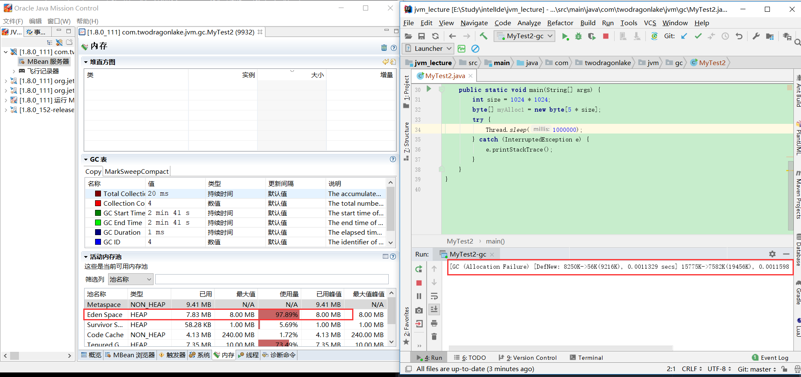

jvm原理（44）阈值和垃圾收集器类型对于对象分配的影响实战分析
命令介绍：
java -XX:+PrintCommandLineFlags -version
打印jvm默认启动参数，以及jvm的版本号
运行结果：
1 | -XX:InitialHeapSize=267006656 -XX:MaxHeapSize=4272106496 -XX:+PrintCommandLineFlags -XX:+UseCompressedClassPointers -XX:+UseCompressedOops -XX:-UseLargePagesIndividualAllocation -XX:+UseParallelGC |
-XX:InitialHeapSize=267006656：初始的堆大小是267006656，单位是字节。
-XX:MaxHeapSize=4272106496:最大的堆大小是4272106496字节。
-XX:+PrintCommandLineFlags：命令本身。
-XX:+UseCompressedClassPointers：使用压缩的类指针。
-XX:+UseCompressedOops：表示从32位的jvm迁移到64位的jvm的时候会有指针膨胀，如果开启这个参数，会对一些指针不去膨胀，减少空间的占用
-XX:+UseParallelGC：当我们不去指定新生代和老年代的收集器的时候，新生代垃圾收集器默认是 Parallel Scavenge，老年代垃圾收集器是Parallel Old。
程序演示
1 | /** |
运行结果：
1 | Heap |
我们可以看到我们分配了一个4M大小的对象，具名参数-XX:PretenureSizeThreshold=4194304 表示对象大小超过4M直接进入老年代，但是我们程序运行的jvm日志表示的是【PSYoungGen total 9216K, used 7643K】和【ParOldGen total 10240K, used 0K】，对象还是在新生代，对象没有直接进入老年代。
其实这里PretenureSizeThreshold参数需要搭配串行收集器，需要指定收集器为-XX:UseSerialGC。现在程序的jvm参数如下：
1 | -verbose:gc |
运行程序结果如下：
1 | Heap |
** tenured generation total 10240K, used 5120K [0x00000000ff600000, 0x0000000100000000, 0x0000000100000000) **
5120K就是myAlloc1的大小，PretenureSizeThreshold参数生效。因此PretenureSizeThreshold参数要和串行收集器使用。
现在去掉【-XX:+UseSerialGC】启动参数，然后修改程序为：
1 | public static void main(String[] args) { |
运行结果：
1 | Heap |
即创建一个8M的数组，eden是8M，肯定无法存放，这个时候对象会直接进入老年代(注意不是PretenureSizeThreshold的作用)，可以看到【 tenured generation】的已使用空间是8192K(8M).
接下来我们把程序修改为：
1 | public static void main(String[] args) { |
对象大小改为10M运行：
1 | [GC (Allocation Failure) [Tenured: 0K->705K(10240K), 0.0056446 secs] 2359K->705K(19456K), [Metaspace: 3374K->3374K(1056768K)], 0.0057131 secs] [Times: user=0.00 sys=0.00, real=0.01 secs] |
从运行结果上看最终是对象分配失败，出现了oom，这个对象在新生代和老年代都是无法存放的。
修改程序的jvm参数：
1 | -verbose:gc |
程序也做修改：
1 | public class MyTest2 { |
加入线程程等待是为了我们在运行程序之后要运行jvisualvm。
然后运行jvisualvm。
由于jvisualvm的监听要在jvm里边消耗内存，所以我们的程序会打印minor gc日志：
1 | [GC (Allocation Failure) [DefNew: 8192K->1024K(9216K), 0.0108187 secs] 13312K->6888K(19456K), 0.0108706 secs] [Times: user=0.00 sys=0.00, real=0.01 secs] |
对应的jvisualvm的堆曲线会发生下跌。
System.gc();
通知jvm是时候进行垃圾回收了，但是jvm不一定去执行垃圾回收，哪System.gc()的意义是什么呢？垃圾回收是只有在进行对象创建的时候jvm才会去进行垃圾回收，而System.gc()是在jvm中没有对象正在创建的时间点去执行垃圾回收，这个时候调用System.gc()jvm也会去进行响应，这就是System.gc()的作用所在。
jmc
上面程序运行的时候我们可以使用jmc查看jvm的使用情况：

从图中可以看到metaspace的使用量快满了的时候jvm会进行一次gc。
同时也可以可以查看jvm的启动参数：
jmc的飞行器
jcmd查看jvm启动参数
1 | C:\Users\Administrator>jps |
MaxTenuringThreshold与阈值的动态调整详解
编写程序:
1 | /** |
运行程序得到结果：
1 | -XX:InitialHeapSize=20971520 -XX:InitialTenuringThreshold=5 -XX:MaxHeapSize=20971520 -XX:MaxNewSize=10485760 -XX:MaxTenuringThreshold=5 -XX:NewSize=10485760 -XX:+PrintCommandLineFlags -XX:+PrintGC -XX:+PrintGCDetails -XX:+PrintTenuringDistribution -XX:SurvivorRatio=8 -XX:+UseCompressedClassPointers -XX:+UseCompressedOops -XX:-UseLargePagesIndividualAllocation -XX:+UseParallelGC |
** Desired survivor size 1048576 bytes, new threshold 5 (max 5) **
new threshold 5 是动态计算出来的，max 5是参数-XX:MaxTenuringThreshold=5的设定。
** Desired survivor size 1048576 bytes **
1048576是1M，因为我们的设置的survivor的大小就是1M。
** ParOldGen total 10240K, used 8193K [0x00000000fec00000, 0x00000000ff600000, 0x00000000ff600000) **
代表新生代已经有对象晋升到老年代了。
MaxTenuringThreshold实例讲解
编程程序：
1 | /** |
程序运行结果：
1 | 2019-05-18T18:06:40.235+0800: [GC (Allocation Failure) 2019-05-18T18:06:40.235+0800: [ParNew |